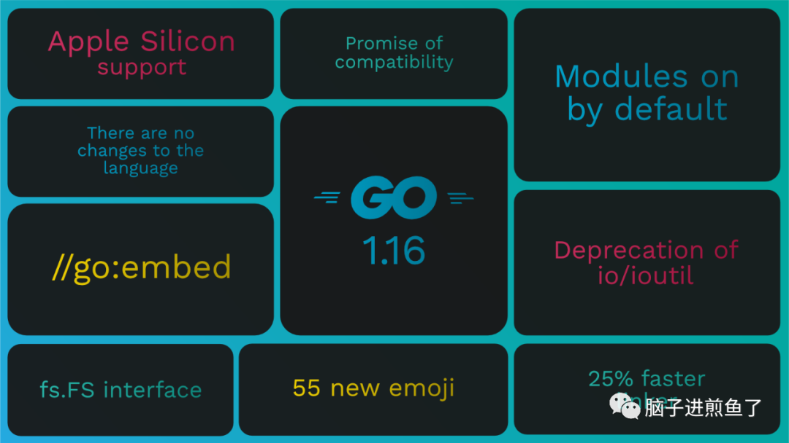

前几天 Go 官方正式发布了 1.16 版本。从这个版本起，环境变量 GO111MODULE 的默认值正式修改为 on。

这也意味着 Go modules 将更进一步推进其业务覆盖面，有新老项目共存的小伙伴建议手动将 GO111MODULE 调整为 auto。
Go1.16 针对 Go modules 放出了一个新特性，能够让维护第三方库（需含 Go mod）的开发者拥有反复吃 “后悔药” 的权力，可以提醒使用者已发布的 “脏” 版本存在问题及了解其原因。
这个新特性，对于许多维护和使用公共库（开源、企业等）的小伙伴简直是一个小福音，建议大家都应该要了解这个知识点。
在接下来文章中将进行详细说明和介绍。
后悔药：Go mod retract
Go1.16 起可以在 go.mod 文件中使用 retract 指令来声明该第三方模块的某些发行版本不能被其他模块使用。
在使用场景上：在发现严重问题或无意发布某些版本后，模块的维护作者可以撤回该版本，支持撤回单个或多个版本。
以前没有办法解决，因此一旦出现就非常麻烦。对应两者的操作如下：
维护者：
- 删除有问题版本的 tag。
- 重新打一个新版本的 tag。
使用者：
- 发现有问题的版本 tag 丢失，需手动介入。
- 不知道有问题，由于其他库依赖，因此被动升级而踩坑。
因此在本次 Go1.16 发布后，就拥有了一个半止损的新手段了，也可以作为 Go mod 自动更新的大坑的补全办法之一。
实战演练
为了方便演示，首先创建一个 Demo 项目（github.com/eddycjy/go-retract-demo），其含有一个基础方法：
1 | package go_retract_demo |
另外有一个应用工程依赖了该第三方库，代码如下：
1 | func main() { |
对应的 go.mod 文件如下：
1 | module github.com/eddycjy/awesomeProject |
retract 特性演示
但随着时间不断推移，第三方开源库 eddycjy/go-retract-demo 即将迭代到 v0.3.0 时，发现以往的 v0.2.0 是有 BUG 的。
需要紧急的在v0.3.0 版本把这个 BUG 修复并提醒出去。此时可以在 go.mod 文件中写入 retract 指令：
1 | module github.com/eddycjy/go-retract-demo |
指令上面为撤回的原因，后面是具体的版本。如果涉及多版本，可以如下编写：
1 | retract ( |
retract 特性效果
成功发布最新版本 v0.3.0 版本并指定 retract 后。所有引用了该库的工程应用，执行 go list 就可以看到如下提醒：
1 | $ go1.16 list -m -u all |
结合该命令，我们日常使用的 IDE（例如：GoLand），其在保存时是会默认执行 go list 命令的。在后续 IDE 支持后，就可以在编码时就快速发现有问题的版本和提示。
在手动执行 go get 时也会出现 warning 提示，会把 go.mod 文件上的原因注释显示出来：
1 | $ go1.16 get github.com/eddycjy/go-retract-demo@v0.2.0 |
这样就能看到是哪个模块依赖，因为什么原因要求撤回了，非常直观。
总结
以往在出问题后每个个体需要跑去问维护者或者看 GitHub Commits，那样总归非常麻烦，很可能一来一回半个钟就没了。
新特性给予了 Go modules 软撤回版本的一个方法，能够把问题更直观的反馈到开发者的手中，再结合日常开发工具的话更是美哉。
但这个特性的完全应用目前也是有一定的阻碍的：
- 国内模块代理：需要国内的模块代理也支持 retract ，否则即使你更新了版本也没有提示处理（此处是我的模块代理缓存问题）。
- IDE：IDE 针对 retract 做一些支持，例如：文字颜色标红、黄等，能够便于开发者更好的识别。
你对 Go modules 的 retract 特性怎么看，欢迎一起留言讨论！